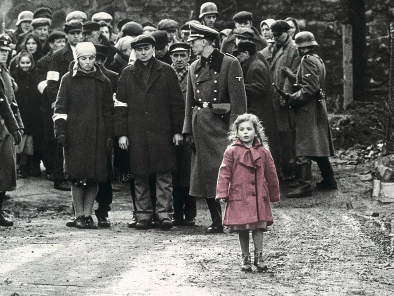
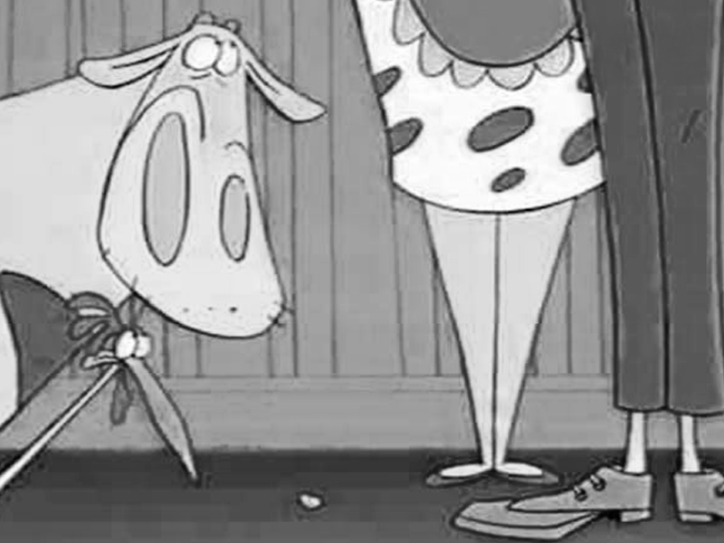

Reseña Investigativa
Los Desaparecidos del Palacio de Justicia: Memoria y Búsqueda de Verdad
“El 6 de noviembre de 1985 el M-19 tomó el Palacio de Justicia en Bogotá. La fuerza pública respondió con una operación de retoma que derivó en la destrucción del edificio, numerosas muertes y varias desapariciones que, hasta hoy, generan demandas de verdad y justicia.”
La Desaparición Forzada: Voces que no Regresaron
Los desaparecidos, a causa de las fuerzas militares, fueron 12: 7 trabajadores de la cafetería, 4 visitantes ocasionales y 1 integrante del M-19.
Empleados de la Cafetería
- Carlos Augusto Rodríguez Vera (Administrador)
- David Suspes Celis (Empleado)
- Bernardo Beltrán Hernández (Mesero)
- Héctor Jaime Beltrán Fuentes (Mesero)
- Cristina del Pilar Guarín Cortés (Cajera)
- Lucy Amparo Oviedo Bonilla (Empleado)
- Ana Rosa Castiblanco Torres (Oficios varios)
Visitantes/Ocasionales
- Luz Mary Portela León (Visitante)
- Gloria Stella Lizarazo Figueroa (Visitante)
- Norma Constanza Esguerra Forero (Visitante, estudiante)
- Gloria Anzola de Lanao (Visitante, ejecutiva)
Miembro del M-19
- Irma Franco Pineda (Integrante M-19)
Memoria, Resistencia y Verdad
Las familias de los desaparecidos crearon redes de apoyo para exigir justicia, documentando cada avance en las investigaciones y manteniendo viva la memoria de sus seres queridos.
Con el paso de los años, distintas instituciones han aportado piezas clave a la verdad, como:
- Sentencias Judiciales: En 2014, la Corte Interamericana de Derechos Humanos (Corte IDH) responsabilizó al Estado colombiano por las desapariciones forzadas y ejecuciones extrajudiciales durante la retoma del Palacio de Justicia.
- Investigaciones Forenses: La Fiscalía General de la Nación, con apoyo del Grupo de Antropología Forense, ha exhumado y analizado restos óseos. En algunos casos se han logrado identificaciones, pero también se han documentado errores graves en la entrega de restos a familiares.
- Archivos Desclasificados: La Comisión de la Verdad reveló documentos militares que confirman la custodia de varias de las víctimas al salir con vida del Palacio. Estos archivos, conocidos como “las cajas negras de la desaparición”, muestran que hubo ocultamiento de información y manipulación de registros.
Avances y Noticias Recientes
Las investigaciones forenses y judiciales han permitido esclarecer parcialmente el destino de algunos desaparecidos del Palacio de Justicia. Hasta el momento, se han identificado los restos de: Cristina del Pilar Guarín, Héctor Jaime Beltrán Fuentes, Jaime Beltrán Hernández, Ana Rosa Castiblanco y Luz Mary Portela.
Según la Corte Interamericana de Derechos Humanos (CIDH), de las 11 víctimas oficialmente reconocidas, 6 han sido ubicadas, mientras que 5 continúan desaparecidas, manteniendo abierta la incertidumbre para sus families y el reclamo de justicia.
Estos hallazgos son fruto de años de trabajo forense y de la lucha persistente de los familiares, aunque aún queda camino por recorrer para esclarecer plenamente lo sucedido.
Referencias
- Centro Nacional de Memoria Histórica. (2015, 5 de noviembre). 30 años del Palacio de Justicia. Exigiendo justicia y verdad [Micrositio]. https://centrodememoriahistorica.gov.co/micrositios/palacio-de-justicia-30-anos/
- Comisión para el Esclarecimiento de la Verdad, la Convivencia y la No Repetición (CEV). (s/f). Caso: Palacio de Justicia. https://www.comisiondelaverdad.co/caso-palacio-de-justicia
- Comisión para el Esclarecimiento de la Verdad, la Convivencia y la No Repetición (CEV). (s/f). Las cajas negras de la desaparición forzada. https://www.comisiondelaverdad.co/violacion-derechos-humanos-y-derecho-internacional-humanitario/las-cajas-negras-de-la-desaparicion
- Comisión para el Esclarecimiento de la Verdad, la Convivencia y la No Repetición (CEV). (2022, 28 de junio). Hay futuro si hay verdad: Informe Final. https://www.comisiondelaverdad.co/
- El Espectador. (2015, 5 de noviembre). Fotografía cortesía El Espectador. Publicado por CNMH. https://centrodememoriahistorica.gov.co/micrositios/palacio-de-justicia-30-anos/
- El Tiempo. A 34 años, Estado sigue sin hallar a cinco desaparecidos del Palacio. https://www.eltiempo.com/justicia/conflicto-y-narcotrafico/los-desaparecidos-del-palacio-de-justicia-que-aun-no-han-sido-encontrados-431060
Guion Literario
Escena 1: La Cafetería
Encabezado
Reseña
La pantalla está en negro con un texto: BOGOTÁ, 6 DE NOVIEMBRE DE 1985.
Desde una perspectiva baja que solo capta los pies, vemos a la empleada caminar hacia la mesa de una cliente. Tienen un corto cruce de palabras. De vuelta, una ráfaga de tiros la asusta, anunciando la toma.
Personajes
TERESA (49 años) - Empleada
FANNY (41 años) - Cliente
Diálogo
Escena 2: Buscando la Salida
Encabezado
Reseña
El foco sigue en los pies de la empleada, que se mueven veloces sobre documentos esparcidos. Se escucha su respiración agitada y el palpitar de su corazón. Unas botas de guerrillero le cortan el paso.
Personajes
TERESA (49 años) - Empleada
GUERRILLERO (35 años) - Captor
Diálogo
Escena 3: Rehén
Encabezado
Reseña
A ras de suelo, vemos los pies de la empleada, ahora una rehén. Su leve agitación delata el miedo. Las botas del guerrillero que la custodia entran y salen de escena. De una radio lejana se oye un partido y la voz frustrada del guerrillero.
Personajes
TERESA (49 años) - Rehén
GUERRILLERO (35 años) - Custodio
Diálogo
Escena 4: Retoma
Encabezado
Reseña
Al día siguiente, una explosión estremece el lugar. En la radio se oye una orden. Las botas del guerrillero, desorientado, abandonan el lugar. Los pies de la rehén, con manos atadas, se levantan para escapar.
Personajes
TERESA (49 años) - Rehén
GUERRILLERO (35 años) - Custodio
COMANDANTE
Diálogo
Escena 5: Falsa Esperanza
Encabezado
Reseña
La cámara sigue los pies de Teresa buscando una salida. Es interceptada por un soldado que la guía a una aparente salvación. La escena se corta a negro y sobre la oscuridad aparece el texto final: "TERESA NUNCA VOLVIÓ A CASA."
Personajes
TERESA (49 años) - Liberada
SOLDADO (27 años) - Rescatista
Diálogo
Inspiración y Referentes
La Lista de Schindler (1993)
La dirección de Spielberg fue un pilar en el tono y la estética. Adoptamos su poderosa paleta en blanco y negro para reflejar la crudeza de un evento histórico y doloroso. La musicalización fue clave: nos inspiramos en cómo John Williams usó el violín como una voz sobria y casi "amorosa" que contrasta con el horror. Por esta razón, decidimos usar como fondo "Beethoven: Violin Romance No. 2 in F Major, Op. 50". Esta pieza genera un profundo contraste entre la armonía y tranquilidad de la sinfonía y el caos de los sonidos que realmente narran la historia. Creemos que esta fricción es poderosa: en lugar de subrayar la violencia, la música la envuelve en una capa de normalidad trágica, haciendo la experiencia más sobrecogedora. El diseño sonoro fue el otro pilar fundamental: el audio de un partido de Millonarios vs. Unión Magdalena, la respiración agitada, los latidos, el tic tac de un reloj y los disparos fuera de campo contaron la historia que la cámara no necesitaba mostrar.
Vaca y Pollito (1997)
Aunque parezca inusual, la mayor inspiración para la narrativa visual vino de esta serie animada. La regla creativa de nunca mostrar los rostros de los padres, limitando su presencia a un par de piernas, se convirtió en el eje central de nuestro relato. Adaptamos esta técnica para enfocar la cámara exclusivamente en los pies de Teresa y de quienes la rodean. Este recurso nos permitió lograr varios objetivos: primero, universalizar su historia al no atarla a un rostro específico. Segundo, obligar al espectador a concentrarse en los detalles sonoros y en el lenguaje corporal de los pies (miedo, prisa, duda). Y, finalmente, simbolizar su recorrido anónimo y vulnerable a través del caos, donde la identidad se pierde y solo queda el rastro de su paso.